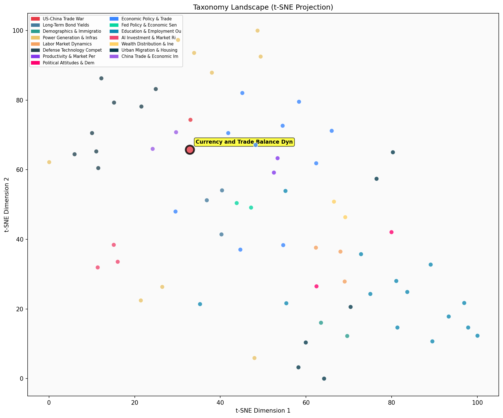

Description
This subcluster examines the monetary and trade flow dimensions of US-China economic tensions, focusing on currency dynamics, trade balance data, and capital movements. Articles analyze official statistics on Chinese exports, GDP contributions, and foreign exchange reserves, alongside central bank policies and gold purchases. Coverage includes renminbi internationalization, manufactured goods surpluses, and dollar weakness impacts on equity markets. The subcluster uniquely emphasizes quantitative trade data and monetary policy responses, drawing from official government statistics, central bank reports, and financial market analysis. It captures both macroeconomic indicators and microeconomic behaviors like wealthy Chinese establishing Singapore family offices.
Similarity to All 70 Subclusters
Each cell represents a subcluster. Color intensity shows similarity (blue=low, red=high). Black line marks current subcluster position.
Relationship to Primary Clusters
Average similarity to each of the 15 primary clusters. Larger area = stronger relationship to that cluster.
Taxonomy Landscape
All 70 subclusters positioned by similarity (t-SNE). Current subcluster highlighted with label. Click to enlarge.
Network Connections
Current subcluster at center, connected to related subclusters. Line thickness = similarity strength.
Most Representative Articles
-
1. The dollar’s weakness risks driving a flight from US equities, “US stocks, particularly Big Tech, ha
-
2. Krugman challenges the notion that US trade deficits result from the dollar’s reserve currency role.
-
3. Bridgewater's Greg Jensen notes US nonfinancial firms capture 39% of global profits while the US eco
-
4. The dollar’s value on a broad trade-weighted basis is almost 2SD above its historical mean. Two peri
-
5. Maurice Obstfeld argues that a "demand switch from import-competing goods toward cheaper Chinese imp
Edge Cases (Boundary Articles)
-
1. The queue to set up a family office in Singapore can now be a year and a half as the rich seek to geThis article is borderline for the "Currency and Trade Balance Dynamics" cluster because while it discusses capital movements (wealthy Chinese moving money to Singapore family offices), it focuses more on wealth management services and regulatory/structural changes rather than monetary policy, currency fluctuations, or trade balance statistics. The article is more about corporate financial services and market structure changes, which better aligns with the alternative "Corporate Valuations & Market Concentration" cluster.
-
2. .@paulkrugman argues gambling has become a national epidemic, and cites @CliffordAsness, “Has thereThis article about gambling as a national epidemic and social media's role in creating mob behavior has virtually no connection to currency dynamics, trade balances, or US-China economic relations that define the assigned cluster. The content is fundamentally about social behavior and public health issues related to gambling, making it a clear misclassification that should belong in the "Youth Health & Social Behavior Decline" cluster instead.
-
3. The billionaire founder of investment bank China Renaissance was in the process of setting up a famiThis article is borderline because while it mentions a Chinese financial executive and Singapore (which could relate to capital flows), it focuses on a personal disappearance story rather than analyzing currency dynamics, trade balances, or monetary policy between the US and China. The content is more about individual circumstances and potential domestic Chinese issues rather than the macroeconomic trade and financial data that defines this cluster.
Original Dendrogram